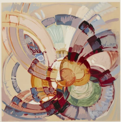

"Roseberys"

František Kupka est né le 22 septembre 1871 à Opočno en Bohême Orientale (région de l’actuelle République Tchèque) dans une famille modeste. Il reçoit d’abord une formation artistique aux Beaux-Arts de Prague en 1884 qu’il poursuit à Vienne en Autriche. Il s’initie à la même période à la philosophie, la littérature, l’histoire naturelle ou encore l’occultisme. Autant d’éléments qui ont marqué durablement sa vie et sa carrière.
Kupka s’installe à Paris en 1896 et gagne sa vie comme illustrateur. Il se consacre dans un premier temps uniquement au dessin satirique en collaborant avec des revues comme L’Assiette au beurre. Ressentant par la suite le besoin de s’émanciper de ce type de réalisation, il se tourne vers l’illustration d’ouvrage littéraire.
En exposant deux grandes toiles non figuratives au Salon d’automne de 1912, Kupka se révèle comme l’un des protagonistes majeurs de la peinture abstraite. C’est la première fois que des œuvres non-figuratives sont exposées en France et les critiques sont négatives.
Pourtant, ses toiles, rythmées en gammes colorées et musicales, vibrent désormais de l’énergie, du mouvement, de la fluidité de la vie. Elles rayonnent.